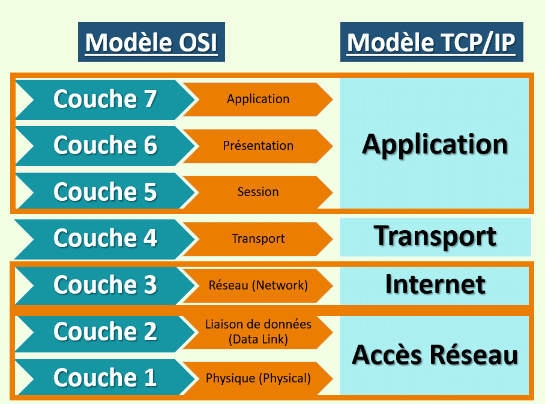

Le réseau informatique désigne les appareils informatiques interconnectés qui peuvent échanger des données et partager des ressources entre eux. Ces appareils en réseau utilisent un système de règles, appelées protocoles de communication, pour transmettre des informations sur des technologies physiques ou sans fil.
Les differentes couches du modele OSI: